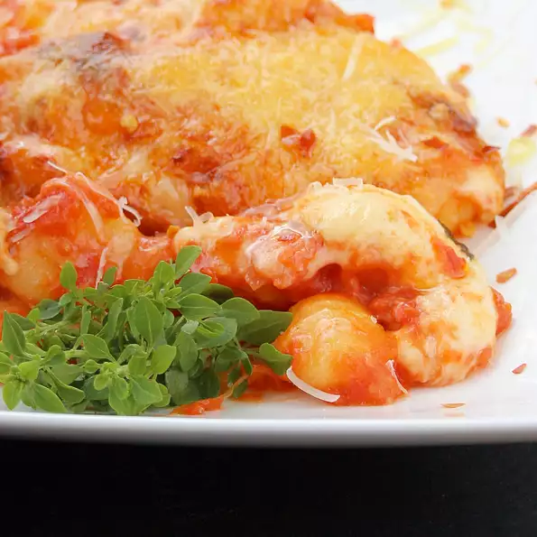

Gnocchi alla Sorrentina

Description
448 calories; protein 29.7g; carbohydrates 36.5g; fat 21.3g; cholesterol 81.8mg; sodium 1400.4mg.
Ingredients
- 2 teaspoons olive oil
- ½ pound potato gnocchi
- 1 small onion, chopped
- 2 cloves garlic, crushed
- 1 clove garlic, minced
- 14 ounces Italian plum tomatoes, halved
- ¼ cup dry white wine
- ¼ cup torn fresh basil leaves
- 7 ounces small fresh mozzarella balls (ciliegine)
- 4 tablespoons finely grated Parmigiano-Reggiano cheese
- 4 sprigs fresh basil
Steps
- Preheat the oven to 400 degrees F (200 degrees C). Lightly oil an oven-safe baking dish.
- Bring a large pot of lightly salted water to a boil. Cook gnocchi in the boiling water until they float to the top, 2 to 4 minutes. Drain and set aside.
- While gnocchi is cooking, heat olive oil in a skillet over medium heat. Add onion and cook until soft and translucent, about 5 minutes. Add garlic and cook until fragrant, about 30 seconds. Cut an "x" into the skin of each tomato with a sharp knife and add to the skillet; stir well. Pour in white wine and simmer until tomatoes are tender, about 10 minutes. Using a spoon, gently crush tomatoes to release juice and pulp. Add basil and continue to gently crush tomatoes to create a sauce. Remove and discard tomato skins as they loosen from the pulp. Cook for 1 more minute over low heat. Add drained gnocchi to the sauce and mix until covered with the sauce.
- Remove skillet from heat and add mozzarella balls, folding everything together gently but quickly, so cheese is coated with sauce but not cooked or melted. Transfer to the prepared baking dish and sprinkle with Parmigiano-Reggiano cheese.
- Bake in the preheated oven until cheese has melted, about 10 minutes. Garnished with fresh basil sprigs.